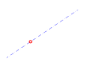

- After activating this snap tool, choose 'Distance', 'Percent', or
'Fraction' from the dropdown box and enter the value in the edit box.

- Specify the first of the two points that define the point to measure
the distance from. (Note: the distance, percent or fraction is always
meausured from the first selected point.)
- Click the second of the two points.
